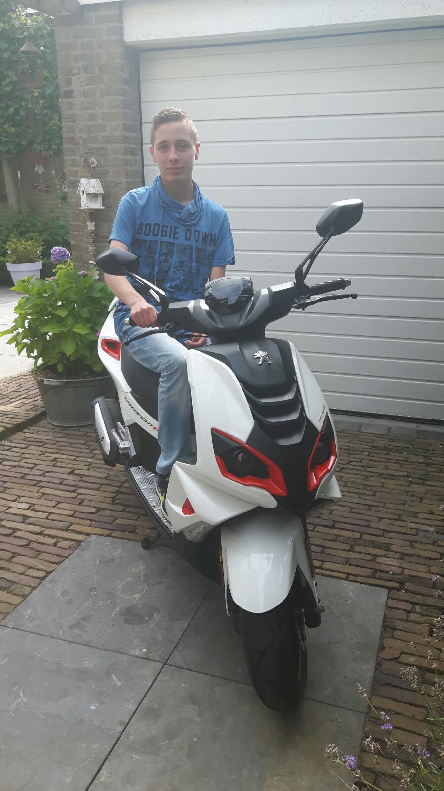

Over mij.
Ik ben Vincent Reijnders en ik ben 16 jaar oud.
Geboren op 14 julli 2000 en woon in Groot-Ammers.
Ik heb al veel scholen gehad het begon allemaal 12 jaar geleden op de basisschool.
De naam van deze basisschool is de ammers hier heb ik een leuke 8 jaar op school gezeten.
Na de basischool ben ik naar het Schoonhovenscollege gegaan voor een vmbo-tl opleiding.
Mijn diploma vmbo-tl heb ik gehaald in 4 jaar.
Nu zit ik op het Da vinci in Gorinchem voor een ICT beheer opleiding
Als u hier meer over wilt weten kunt u naar het menu gaan en op ICT beheer klikken.
Sinds de laatste paar maanden heb ik ook een bijbaantje.
Dit bijbaantje is vakkenvullen bij de Emté supermarkt in Groot-Ammers.
Ik vind dit vakkenvullen soms wel zwaar ,maar het is ook erg leuk om te doen.
